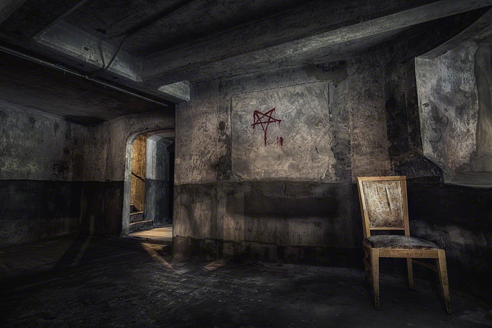

Up stairs, second floor
After you go down all the stairs to the basement, the stairs suddenly all fall out. There is no way to go back up now. When you turn yourself back, you reliazed there's a shawdow at the end of the hallway. You were shocked and nearly scream for help, until you then reliaze that the shawdow is only yourself. After a few tries on each door of the hallway, you've found that all the doors are either locked or heavliy damage. However, only one door was able to open. A door with a spooky smily face on it. What should you do? 